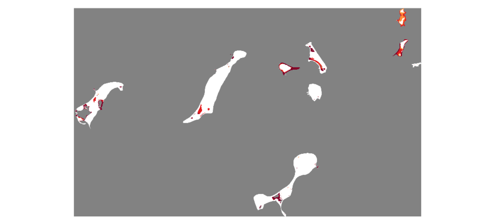
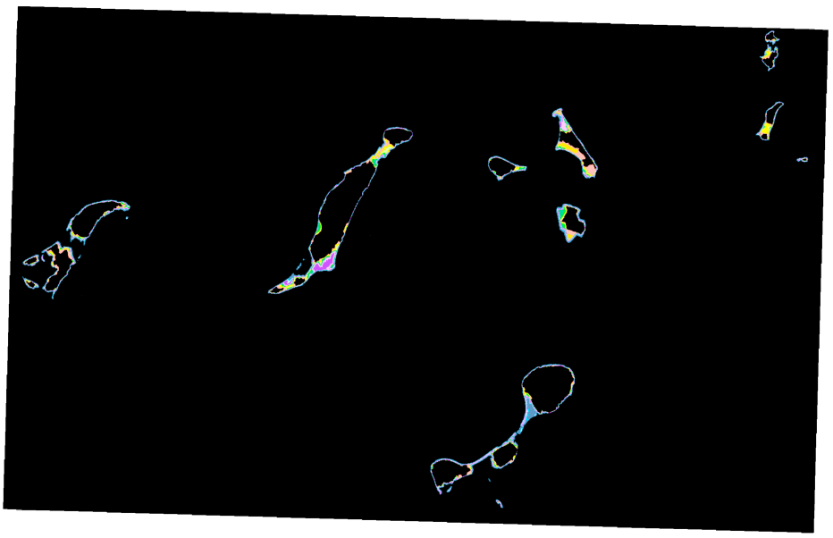
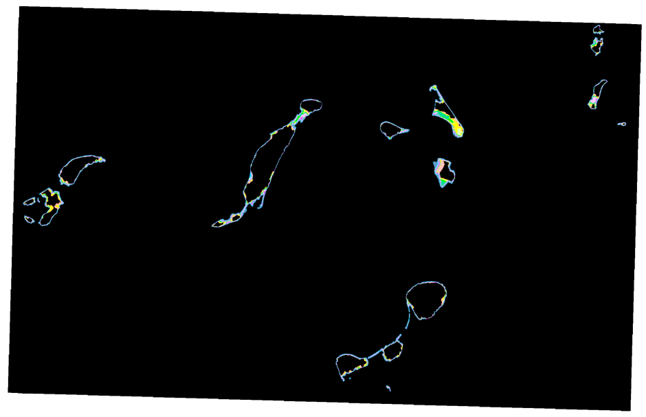
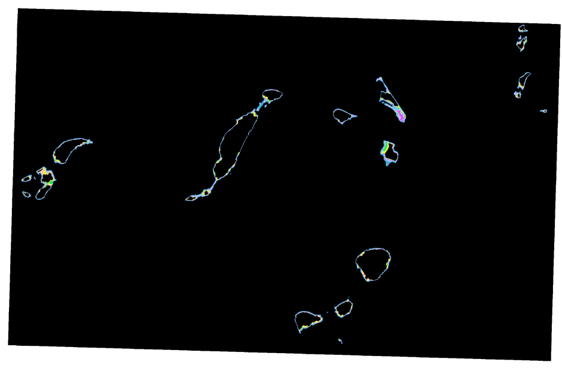

Methodology
Overview of steps:
- Turn cultural resources, natural resource, infrastructure/facilities into a mosaic raster.
- Re-scale the elevation measurements so the lowest elevation is 1 and the highest elevation is 0.
- Code the land cover using reclassify (Dense vegetation = 0, Shrubs/mixed vegetation = 0.5, No vegetation = 1).
- Re-scale the distance from the sandy shorelines so the cells closest to sandy shorelines are 1 and the cells furthest from the sandy shorelines are 0.
- Re-scale the distance from retreating bluffs so the cells closest to bluff are 1 and the cells furthest from the bluff are 0.
- Calculate cell statistics of CFEP zones of Mass CZM rasters. Use this information to reclassify values into 10% and 1% raster grids. Areas within CFEP zones are valued at 1 and outside of zones are 0. Repeat this process for each Sea Level Rise Scneario (2030, 2050, and 2070).
Workspace set-up
#Import system modules
import arcpy
from arcpy import env
from arcpy.sa import *
arcpy.env.workspace = "C:/BOHA_SpatialDecisionSupportSystem/Data"
env.scratchWorkspace ="C:/BOHA_SpatialDecisionSupportSystem/Data/Raster_Scratch.gdb"Data processing and clean-up for Coastal Exposure raster grid inputs
R1. Focal Resources Raster Mosaic.
Focal Resources
Input Group 1: Natural Resources (salt marshes, coastal bird habitats, coastal dunes, rare plant species,
Input Group 2: Cultural Resources (National Historic Landmarks, Native American burial sites, etc.)
Input Group 3: Infrastructure/Facilties (piers, park facilities, cottages, shops, etc.)
#Local variables Focal_Resources_Polys_Merge = "Vector_Data.gdb/Focal_Resources_Polys_Merge" Output_Raster_Dataset = ("C:/BOHA_SpatialDecisionSupportSystem/Data/Raster_Scratch.gdb/FR_Merge_PolygonToRaster") FR_Grid = ("C:/Users/amyca/OneDrive/Documents/GTECH732_AdvGIS/Final_Project/BOHA_SpatialDecisionSupportSystem/Data/Raster_Output.gdb/FR_Grid") # Step 1. Polygon to Raster (Polygon to Raster) (conversion) arcpy.conversion.PolygonToRaster(in_features = Focal_Resources_Polys_Merge, value_field = "Value", out_rasterdataset = Output_Raster_Dataset, cell_assignment="CELL_CENTER", priority_field="NONE", cellsize="1") # Step 2. Reclassify Raster (0 = No Focal Resources, 1 = Focal Resources) FR_r = Reclassify(in_raster = Output_Raster_Dataset, reclass_field="VALUE", remap="1 1;NODATA 0") FR_r.save(FR_Grid)
R2. Raster of localized Boston Harbor Islands conditions that contributes to coastal exposure risk
Erosion Risk
Input 1: Retreating Bluff Zones (0-1)
# Local variables inSourceData_BR = "Vector_Data.gdb/Bluffs_Retreating" #Polyline vector data of bluffs retreating > 0.1m cellSize = 1 mask_features = "Vector_Data.gdb/Amy_BOHA9_POLYS" #Boston Harbor 9 Islands Boundary # Local output save locations in_raster_BR = "C:/BOHA_SpatialDecisionSupportSystem/Data/Raster_Scratch.gdb/BR_EucDistOut" BluffRetreat_Grid = "C:/BOHA_SpatialDecisionSupportSystem/Data/Raster_Outputs.gdb/BluffRetreat_Grid" #Step 1: Euclidean distance tool with arcpy.EnvManager(mask = mask_features): BOHA_BluffsRetreating_EucDistance = arcpy.sa.EucDistance(in_source_data = inSourceData_BR, cell_size = cellSize) BOHA_BluffsRetreating_EucDistance.save(in_raster_BR) in_raster_BR = arcpy.Raster(in_raster_BR) #Step 2: Re-scale the distance from the fluff retreat zones so the cells closest to bluff retreat zones are 1 and the cells furthest from the bluff retreat zones are 0. BluffRetreat_Grid = (1-(in_raster_BR - in_raster_BR.minimum)/(in_raster_BR.maximum-in_raster_BR.minimum)) BluffRetreat_Grid.save(BluffRetreat_Grid)Input 2: Distance from sandy shorelines (0-1)
#Local variables inSourceData_SS = "Vector_Data.gdb/Sandy_Shoreline" #Polyline vector data of "sandy" shorelines mask_features = "Vector_Data.gdb/Amy_BOHA9_POLYS" #Boston Harbor 9 Islands Boundary cellSize = 1 # Local output save locations in_raster_SS = "C:/BOHA_SpatialDecisionSupportSystem/Data/Raster_Scratch.gdb/SS_EucDistOut" SandyShoreline_Grid = "C:/BOHA_SpatialDecisionSupportSystem/Data/Raster_Outputs.gdb/SandyShoreline_Grid" #Step 1: Euclidean distance tool with arcpy.EnvManager(mask = mask_features): SS_EucDistance = arcpy.sa.EucDistance(in_source_data = inSourceData_SS, cell_size = cellSize) SS_EucDistance.save(in_raster_SS) in_raster_SS = arcpy.Raster(in_raster_SS) #Step 2: Re-scale the distance from the sandy shorelines so the cells closest to sandy shorelines are 1 and the cells furthest from the sandy shorelines are 0. SS_Grid = (1-(in_raster_SS - in_raster_SS.minimum)/(in_raster_SS.maximum-in_raster_SS.minimum)) SS_Grid.save(SandyShoreline_Grid)Input 3: Unvegetated land cover (0 = dense vegetation, 0.5 = partial vegetation, 1 = no vegetation)
# Local variables insourceData_LC = "Vector_Data.gdb/Landcover_polys" #Polygons of landcover on the 9 Islands cellSize = 1 mask_features = "Vector_Data.gdb/Amy_BOHA9_POLYS" #Boston Harbor 9 Islands Boundary # Local output locations Landcover_raster = "C:/BOHA_SpatialDecisionSupportSystem/Data/Raster_Scratch.gdb/Landcover_Raster" Landcover_Grid = "C:/BOHA_SpatialDecisionSupportSystem/Data/Raster_Outputs.gdb/Landcover_Grid" # Step 1: Turn vector data into raster data with arcpy.EnvManager(mask = mask_features): arcpy.conversion.PolygonToRaster(in_features = insourceData_LC, value_field = "COVERCODE", out_rasterdataset = Landcover_raster, cellsize = cellSize) # Step 2: Code the land cover using reclassify (0 = dense vegetatation, 0.5 = partially vegetated, 1 = no vegetation) LC_ReclassifyGrid = arcpy.sa.Reclassify(in_raster = Landcover_raster, reclass_field = "Value", remap = RemapValue([[2,10],[5,10],[6,5],[7,5],[8,5],[9,0],[10,0],[12,0],[13,0], [14,0],[15,5],[18,5],[19,10],[20,10],[23,10]])) # Step 3: Raster calculator so that vegetation is valued at 0 to 1 LC_Grid = LC_ReclassifyGrid/10 LC_Grid.save(Landcover_Grid)Food Risk
Input 4: Elevation
# Local variables inRaster_Elev = arcpy.Raster("Raster_Data.gdb/MA_GCS_3m_NAVDm") #Lidar elevation (m) data of Massachusetts mask_features = "Vector_Data.gdb/Amy_BOHA9_POLYS.shp" #Boston Harbor 9 Islands Boundary # Local output locations Elevation_Grid = "C:/BOHA_SpatialDecisionSupportSystem/Data/Raster_Outputs.gdb/Elevation_Grid" #Step 1: INVERSE: Re-scale the elevation measurements so the lowest elevation is 1 and the highest elevation is 0. with arcpy.EnvManager(mask = mask_features): Elev_Grid = (1-(inRaster_Elev - inRaster_Elev.minimum)/(inRaster_Elev.maximum - inRaster_Elev.minimum)) Elev_Grid.save(Elevation_Grid)Storm risk
Input 5: Sea Level Rise 10% AEP
#Local variables Name = "Raster" MassCZM_folder = "C:/BOHA_SpatialDecisionSupportSystem/Data/MassCZM_folder" #Local output locations CellStatistic_Ouput = fr"C:/BOHA_SpatialDecisionSupportSystem/Data/Raster_Scratch.gdb/{Name}CellStats" CellStats = CellStatistic_Ouput c_10CFEP = "C:/BOHA_SpatialDecisionSupportSystem/Data/Raster_Outputs.gdb/{Name}c_10CFEP" Reclassify_c_10CFEP = c_10CFEP #Setting the environment (MassCZM_folder = SLR Scenarios 2030, 2050, 2070 and related CFEP Rasters) for Raster, Name in MassCZM_folder: # Step 1: Cell Statistics. This process will calculate a cell-by-cell mean statistic from multiple rasters...the Mass_CZM Coastal Flood Excedence RGB raster data CellStatistic_Ouput = arcpy.sa.CellStatistics(in_rasters_or_constants = [Raster], statistics_type = "MEAN", ignore_nodata = "DATA", process_as_multiband = "SINGLE_BAND", percentile_value = 90, percentile_interpolation_type = "AUTO_DETECT") CellStatistic_Ouput.save(CellStats) # Step 2a: Reclassify and assign cell statistic values to reflect 10% CFEP c2030_10CFEP = arcpy.sa.Reclassify(in_raster = CellStatistic_Output, reclass_field = "VALUE", remap = "0 0;28.666666 0;84.333336 0;85.666664 1;86.666664 0;136 1;140.333328 1;148 0;169.666672 0;170 0;172.666672 0;199 0;208.333328 1", missing_values = "DATA") c_10CFEP.save(Reclassify_c_10CFEP)
R3. Sea Level Rise 1% AEP
#Local Variables Name = "Raster" #Local Ouputs c2030_1CFEP = "C:\\Users\\amyca\\Dropbox (Hunter College)\\BOHA_Final_Project_Products\\Raster_Calculator_Grids\\MassCZM_CFEP.gdb\\c2030_1CFEP" Reclassify_c_1CFEP = c_1CFEP #Setting the environment for Raster, Name in MassCZM_folder: # Step 1: Cell Statistics. This process will calculate a cell-by-cell mean statistic from multiple rasters...the Mass_CZM Coastal Flood Excedence RGB raster data CellStatistic_Ouput = arcpy.sa.CellStatistics(in_rasters_or_constants = [Raster], statistics_type = "MEAN", ignore_nodata = "DATA", process_as_multiband = "SINGLE_BAND", percentile_value = 90, percentile_interpolation_type = "AUTO_DETECT") CellStatistic_Ouput.save(CellStats) # Step 2b. Reclassify and assign cell statistic values to reflect 1% CFEP c_1CFEP = arcpy.sa.Reclassify(in_raster = CellStatistic_Ouput, reclass_field = "VALUE", remap="0 0;28.666666 0;84.333336 1;85.666664 1;86.666664 1;136 1;140.333328 1;148 1;169.666672 1;170 1;172.666672 1;199 1;208.333328 1", missing_values="DATA") c_1CFEP.save(c_1CFEP)
MCE #1 Raster Calulator Equation
The following equation is what is used to calculate the weights of the final coastal exposure. The weights are easily editable and adjustable depending on the user’s preferences. The local variables can also be swapped out, as long as the user’s raster grids have a value scale of 0 to 1.
#Local variables
BR_Grid = arcpy.Raster("Raster_Outputs.gdb/BluffRetreat_Grid")
SS_Grid = arcpy.Raster("Raster_Outputs.gdb/SandyShoreline_Grid")
VegLC_Grid = arcpy.Raster("Raster_Outputs.gdb/Landcover_Grid")
Elev_Grid = arcpy.Raster("Raster_Outputs.gdb/Elevation_Grid")
FR_Grid = arcpy.Raster("Raster_Outputs.gdb/FocalResources_Grid")
SLR2030_CFEP10 = arcpy.Raster("Raster_Outputs.gdb/c2030_10CFEP")
SLR2030_CFEP1 = arcpy.Raster("Raster_Outputs.gdb/c2030_1CFEP")
output_raster2030 = ("C:/BOHA_SpatialDecisionSupportSystem/Data/CoastalExposure_FR_RiskRatings.gdb/MCE1_GRID2030")
SLR2050_CFEP10 = arcpy.Raster("Raster_Outputs.gdb/c2050_10CFEP")
SLR2050_CFEP1 = arcpy.Raster("Raster_Outputs.gdb/c2050_1CFEP")
output_raster2050 = ("C:/BOHA_SpatialDecisionSupportSystem/Data/CoastalExposure_FR_RiskRatings.gdb/MCE1_GRID2050")
SLR2070_CFEP10 = arcpy.Raster("Raster_Outputs.gdb/c2070_10CFEP")
SLR2070_CFEP1 = arcpy.Raster("Raster_Outputs.gdb/c2070_1CFEP")
output_raster2070 = ("C:/BOHA_SpatialDecisionSupportSystem/Data/CoastalExposure_FR_RiskRatings.gdb/MCE1_GRID2070")
#Raster Calculator
#SLR 2030
output1 = (((BR_Grid*20) + (SS_Grid*10) + (VegLC_Grid*10) + (Elev_Grid*30) + (SLR2030_CFEP10*30)) *
(SLR2030_CFEP1)*
(FR_Grid))
output1.save(output_raster2030)
#SLR 2050
output2 = (((BR_Grid*20) + (SS_Grid*10) + (VegLC_Grid*10) + (Elev_Grid*30) + (SLR2050_CFEP10*30)) *
(SLR2050_CFEP1)*
(FR_Grid))
output2.save(output_raster2050)
#SLR 2070
output3 = (((BR_Grid*20) + (SS_Grid*10) + (VegLC_Grid*10) + (Elev_Grid*30) + (SLR2070_CFEP10*30)) *
(SLR2070_CFEP1)*
(FR_Grid))
output3.save(output_raster2070)
Apppendix
[1] Land Cover Data

| ID | Land Cover Type |
| 2 | Impervious |
| 5 | Developed Open Space |
| 6 | Cultivated Land |
| 7 | Pasture/Hay |
| 8 | Grassland |
| 9 | Deciduous Forest |
| 10 | Evergreen Forest |
| 12 | Scrub/Shrub |
| 13 | Palustrine Forested Wetland (C-CAP) |
| 14 | Palustrine Scrub/Shrub Wetland (C-CAP) |
| 15 | Palustrine Emergent Wetland (C-CAP) |
| 16 | Estuarine Forested Wetland (C-CAP) |
| 17 | Estuarine Scrub/Shrub Wetland (C-CAP) |
| 18 | Estuarine Emergent Wetland (C-CAP) |
| 19 | Unconsolidated Shore |
| 20 | Bare Land |
| 21 | Open Water |
| 22 | Palustrine Aquatic Bed (C-CAP) |
| 23 | Estuarine Aquatic Bed (C-CAP) |
[2] Mass CZM Rasters


